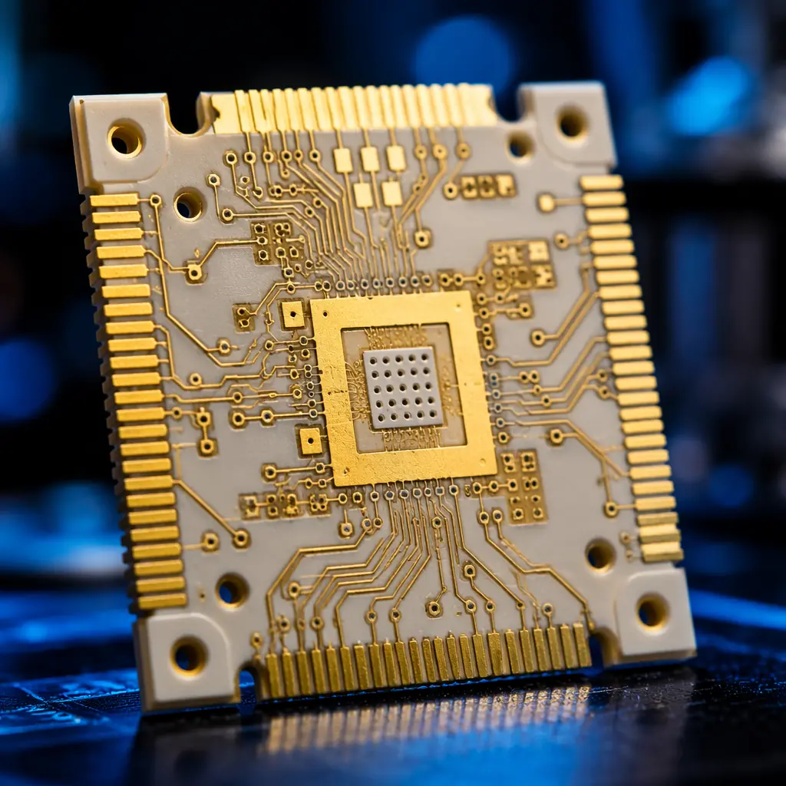
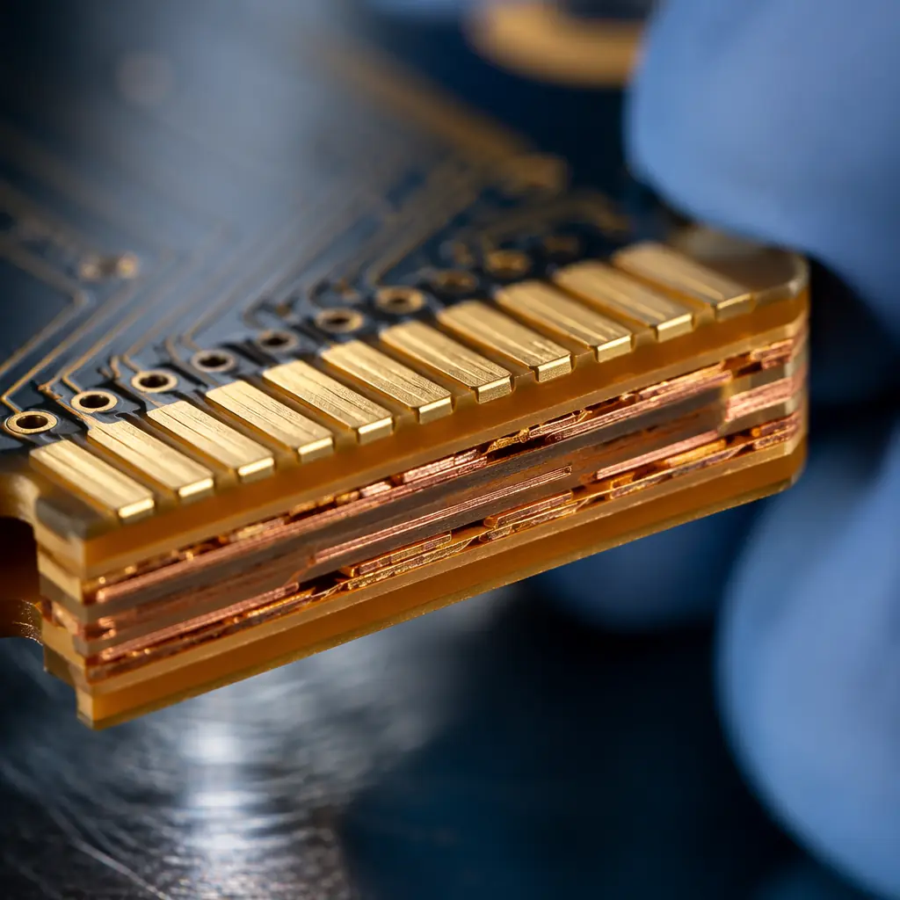

A single 300mm wafer fab represents over $20 billion in capital investment. The PCB inside a plasma etch chamber — a board that might cost $400 to manufacture — can cause millions in scrapped wafers if it outgasses contaminants, delaminates under vacuum, or fails at the 250°C operating temperature of a deposition tool. Semiconductor equipment PCBs operate in an environment that makes automotive under-hood electronics look forgiving.
Standard IPC-A-610 Class 3 acceptance criteria were written for aerospace and medical electronics — not for the combination of ultra-high vacuum (10⁻⁶ Torr), aggressive process gases (Cl₂, SF₆, NF₃), and thermal cycling between ambient and 300°C that semiconductor fab equipment imposes. At Huaxing PCBA, we manufacture PCBs for wafer handling subsystems, RF matching networks, and gas delivery control modules that meet the semiconductor industry's unique cleanliness and reliability demands. This article defines the requirements that separate a standard high-reliability PCB from one qualified for semiconductor equipment.

Why Standard High-Reliability PCB Specifications Fall Short
IPC Class 3 defines workmanship criteria for electronic assemblies where "continued performance is critical and equipment downtime cannot be tolerated." But semiconductor equipment adds three failure modes that Class 3 does not address: contamination-induced wafer defects, material outgassing under vacuum, and thermal decomposition at sustained temperatures above 200°C.
Particle Contamination — The Part-Per-Billion Problem
A single 0.1μm particle landing on a wafer during lithography can kill a die. The PCB inside a wafer handling robot or load-lock chamber must not shed particles — not during manufacturing, not during installation, and not across years of thermal cycling. This means: no bare FR-4 edges (router dust is a particle source), no solder mask flaking, and post-fabrication ultrasonic cleaning in Class 100 cleanroom conditions. Our semiconductor-grade PCBs undergo ionic contamination testing with ROSE limits tightened to ≤1.0 μg/cm² NaCl equivalent — five times stricter than standard IPC requirements.
Outgassing Under Vacuum — The Invisible Contamination Source
Standard FR-4 laminate releases volatile organic compounds when heated under vacuum. Inside a PECVD chamber operating at 10⁻⁵ Torr and 300°C, these volatiles deposit on chamber walls and wafers as thin-film contamination. NASA outgassing specifications (ASTM E595) require TML ≤1.0% and CVCM ≤0.1% for space applications. Semiconductor equipment often demands even tighter limits — particularly for PCBs in deposition and etch chambers where molecular contamination directly impacts yield. Materials like polyimide and PTFE-based laminates offer significantly lower outgassing than standard FR-4.
Sustained High-Temperature Operation
Automotive PCBs see brief reflow peaks at 260°C. Semiconductor equipment PCBs operate at 150-250°C continuously for years — inside etch chambers, deposition tools, and rapid thermal processing (RTP) systems. Standard FR-4 (Tg 130-140°C) will delaminate. High-Tg FR-4 (Tg 170-180°C) survives only at the lower end of this range. For sustained operation above 200°C, polyimide (Tg >250°C) or ceramic-filled hydrocarbon laminates are mandatory. Our thermal management guide covers material selection for extreme temperature environments in detail.
Material Selection Rule: Match the laminate's continuous operating temperature rating — not its Tg — to the tool's worst-case steady-state temperature. A polyimide PCB with Tg 260°C can operate continuously at 220°C with margin. High-Tg FR-4 with Tg 180°C should not exceed 140°C continuous, regardless of how many thermal cycles it survives in qualification testing.
Laminate and Surface Finish Selection for Semiconductor Equipment
Material selection for semiconductor equipment PCBs is constrained from both ends: the laminate must survive process temperatures, and the surface finish must not introduce contamination into the wafer environment. The table below summarizes the materials used across major semiconductor equipment subsystems.

| Equipment Subsystem | Recommended Laminate | Surface Finish | Max Temp |
|---|---|---|---|
| Wafer handling / robotics | High-Tg FR-4 (Tg 170+) | ENIG, 3-5 μin Au | 120°C |
| RF matching networks | PTFE / ceramic-filled | ENIG, hard gold edge | 180°C |
| Gas delivery control | Polyimide | ENEPIG | 220°C |
| Etch / deposition chamber | Polyimide or ceramic | Hard gold (50 μin min) | 300°C |
| Polyimide | ENIG, low-outgassing | 150°C |
Manufacturing Protocol: Beyond IPC Class 3
Producing PCBs for semiconductor equipment requires process controls that go beyond standard high-reliability manufacturing. These are not "nice to have" — they are prerequisites that separate semiconductor-qualified fabricators from general-purpose PCB suppliers.
Class 10,000 (ISO 7) Cleanroom for Final Processing
Solder mask application, legend printing, and final inspection must be performed in controlled cleanroom conditions. Standard PCB fabrication cleanrooms are Class 100,000 (ISO 8) — a 10× higher particle concentration. For etch chamber and lithography subsystem PCBs, we process boards in Class 10,000 conditions with HEPA filtration, positive pressure, and continuous particle monitoring.
Multi-Stage Ultrasonic Cleaning
After routing and V-scoring, boards undergo DI water ultrasonic cleaning followed by vapor degreasing to remove particulate and ionic residues. Standard PCB cleaning stops at aqueous wash — insufficient for semiconductor equipment where residual flux or fiberglass dust from routing becomes a contamination source. Our PCB cleaning process comparison covers the tradeoffs between aqueous and solvent-based methods.
Vacuum Bake-Out Before Shipment
PCBs destined for vacuum chambers are baked at 125°C under vacuum (≤10⁻² Torr) for 4-8 hours before packaging. This drives off absorbed moisture and residual volatiles before the board enters the customer's chamber — preventing the outgassing burst that occurs when a PCB sees vacuum for the first time. Each board ships in vacuum-sealed moisture-barrier packaging with desiccant and humidity indicator cards.
Procurement Reality: Semiconductor equipment PCBs cost 3-8× more than equivalent IPC Class 3 boards. The premium comes from material cost (polyimide laminate is 4-6× the price of FR-4), cleanroom processing overhead, and the 100% inspection and bake-out cycle. Budget accordingly, and do not attempt to cost-reduce by relaxing cleanliness requirements — the first wafer scrap event will erase years of PCB cost savings.
What This Means for Your Semiconductor Equipment PCB Order
Semiconductor equipment PCBs sit at the intersection of extreme environment engineering and contamination control — a discipline that neither standard PCB fabrication nor standard cleanroom protocols fully address. Specify your operating temperature, vacuum level, and process gas environment in the fabrication drawing, not just the BOM. At Huaxing PCBA, we support semiconductor equipment OEMs with polyimide and ceramic-filled laminate PCBs, ENEPIG and hard gold surface finishes, Class 10,000 cleanroom processing, vacuum bake-out, and full material traceability per IPC-1782 Level 3. Every board ships with a certificate of conformance that includes lot-level material genealogy and cleanroom particle count data — not just a "QC passed" stamp.